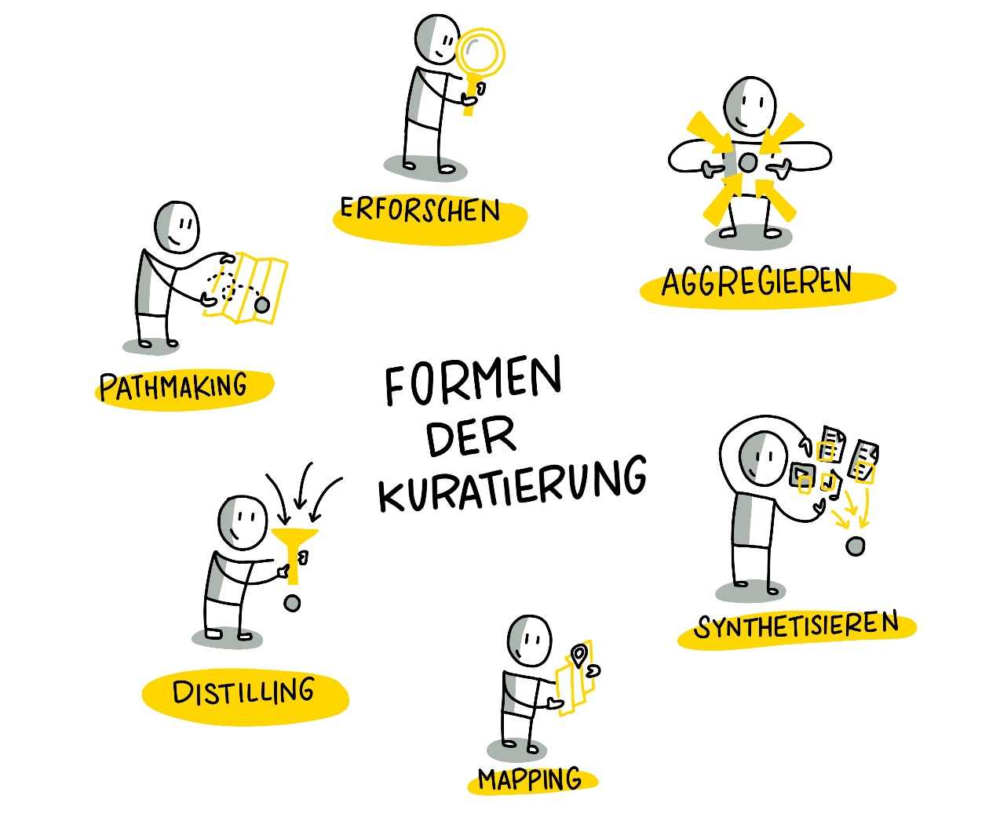

Woche 8
Woche 8 - Formen der Kuratierung
Es gibt ganz unterschiedliche Möglichkeiten wie das kuratierte Ergebnis dargestellt werden kann ("Sensemaking"). Robin Good hat eine umfassende Aufzählung von Ansätzen und Formaten mit vielen spannenden Beispielen in seinem Artikel "Content Curation Approaches: Types and Formats" gesammelt und beschrieben. Diesen Artikel solltest Du Dir auf jeden Fall durchlesen, bevor Du Dir überlegst, welches Format Du einsetzen möchtest.
Allen Typen und Formen ist folgendes gemein - "finding and organizing existing content artifacts to create new insights and shared value" (Robin Good).

Visualisierung von Katrin Mäntele @kleinerw4hnsinn (CC BY)
Folgende Formate bzw. Arten der Kuratierung, die auf den Ideen von Robin Good basieren, finden wir für einen Lernkontext am relevantesten. Wir empfehlen Dir, Formate auszusuchen, mit denen Du Dich wohl fühlst (z. B. \"Ich schreibe gerne\" -\ Blog)
Aggregieren
Das Aggregieren von Contents beschreibt die Arbeit, wenn der Kurator qualitativ hochwertige Inhalte oder Artefakte sammelt, beschreibt und an einem zentralen Ort für seine Zielgruppe bereitstellt. Besonders wertvoll sind diese aggregierten Contents, wenn sie von einem anerkannten Fachmann, einem so genannten "Trusted Guide", bereitgestellt werden.
Ein sehr gutes Beispiel ist https://www.immersivelearning.news/ von Torsten Fell - ein Portal, das alle relevanten Informationen zu Lernen mit Augmented Reality, Virtual Reality und Mixed Reality bereitstellt und auf jeden Fall ein sehr guter Ausgangspunkt für einen "Deep Dive" in das Thema ist.

Screenshot Landingpage Portal Immersive Learning News von Torsten Fell
Profitipp: Wenn Du nach einem bestimmten Thema suchst und eine verlässliche Quelle gefunden hast, nutze die Google-Seitensuche, um schnell zu der gewünschten Information zu gelangen.

Verknüpfen Ganz klassisch geht es beim Synthesizing um das Zusammenfassen von langen, aufwändigen Medien und Inhalten in kurze, knackige Nuggets, die aber die Essenz des Mediums/Inhalts wiedergeben. Auch die Auswahl der Medien ist eine Leistung der Kuratoren*innen.
Klassische Beispiele sind (bezahlte) Services wie www.getabstract.com oder www.blinkist.com, die Bücher, Videos und Podcasts zusammenfassen und als geschriebenen Text, Audio oder Sketchnote präsentieren.

Beispiel: Buchzusammenfassung bei www.blinkist.com
Gemeinsam an diesen vielfältigen und inhaltlich tiefen Portalen ist, dass der einzelne Content meist sehr gut und akkurat zusammengefasst ist, man aber weiterhin nach dem "richtigen" Content suchen muss. Welcher Content aber für Dich und Deine Interessen und Bedürfnisse interessant sein sollte, können diese Portale kaum aussagen - sie agieren hier als Content-Aggregatoren, die zwar eine grobe Orientierung durch Themencluster und Empfehlungen per Algorithmus geben - echte Empfehlungen oder Orientierung durch Trusted Guides bekommt man nicht.
Einen unserer Lieblingsblogs, www.weiterbildungsblog.de, würden wir ebenfalls in den Bereich "Synthesizing" einordnen, da Dr. Jochen Robes zu jedem Artikel, die er sorgfältig filtert und für seine HR und Digital Learning Tribes publiziert, mit einer kurzen persönlichen Einschätzung oder Zusammenfassung Wert hinzufügt und uns Leser*innen einen Hinweis gibt, ob wir uns tiefer mit den von ihm kuratierten Inhalten beschäftigen sollten. Er nimmt uns auch viel Arbeit ab, indem er weltweit Trends und Ideen scoutet, verschlagwortet und einmal wöchentlich in seinem Newsletter verteilt.
![CLC München #CLC089: Content Curation im Corporate Learning By
Jochen Robes, 20. März2019 Das Internet bietet uns eine Fülle von
Informationen. Doch wie finden wir die, die für uns oder für andere
relevant sind? Das Stichwort heißt Content Curation, also das
systematische Auf- finden, Aufbereiten und Veröffentlichen von
Information. Stefan Diepolder hat darüber in München erzählt. Dabei
ging es um die Bedeutung des Themas, seine Auswirkungen, den
nützlichen ro- ten Faden von Harold Jarche („Seek \ Sense \ Share\")
und die Frage, wie Personalentwickler, Unternehmen und jeder einzelne
Wissensarbeiter davon profitieren können. Auch wenn das The- ma auf
keiner Corporate Learning-Agenda ganz oben steht: Es ist fast schon
überraschend, dass wir noch von keinem Unterneh- men und seiner
expliziten Content Curation-Strategie gehört haben ... kristinauth,
Corporate Learning Community, 17. März 2019 Bildquelle: CLC München](../images/image16.png)
Screenshot: #clc089 Meetup Content Curation
Verknüpfen
Beim Mapping sammeln und organisieren Kurator*innen alle wichtigen Elemente, die ein spezifisches Gebiet beschreiben und definieren die Beziehung zwischen den Komponenten.
Das Beispiel der MOOC Plattform Coursera zeigt, dass es auch möglich ist, über 40 Mio. Lerner und über 1000 Kurse aus über 150 Universitäten zu organisieren. Um eine gute User Experience zu ermöglichen müssen die unterschiedlichen Daten mit einer sehr guten Struktur abgelegt und intelligent verknüpft sein. Coursera gelingt dies aus unserer Sicht: man kann seine Suche sehr gut einschränken und hat dabei das Gefühl, dass die Plattform klein, gut gepflegt und übersichtlich ist. Das zeugt von einer sehr guten Kuratoren*innenarbeit.
![Suchen v Was möchten Sie lernen? Niveau Für Unternehmen Entwickler
Anmelden Kostenlose Teilnahme Suchen \ Persönliche Entwicklung
Persönliche Entwicklung o Filtern nach: Kompetenzen Stellenbezeichnung
Sprache v Typ Die beliebtesten Zertifikate Business Too UCI Practical
Man ement Career Success University of California, Irvine UCI Academic
English: Writing University of California, Irvine Arizona State
University TESOL Arizona State University ZERTIFIKAT OBER BE-RUFLICHE
Learning How to Learn Learning How to Learn: Powerful mental tools to
help yo... McMaster University](../images/image17.png)
Destillieren
Diese Form der Kuratierung sorgt dafür, dass die relevantesten Informationen zu einem spezifischen Thema kurz beschrieben und vereinfacht in eine Ordnung gebracht werden. Typisch hierfür sind "Best-of" Listen, die neben einer Verlinkung einen zusätzlichen Wert bereitstellen. Ein gutes Beispiel für Distilling ist die Auflistung der 300 besten Lerntools von Jane Hart.
Lernpfade erstellen Lernpfade sind besonders wertvoll, wenn sie nicht so eng wie in traditionellen Blended Learning-Umgebungen bereitgestellt werden sondern eher eine Art Leitplanke für die eigene, selbstbestimmte Entwicklung darstellen.
Das Gelernte können wir selbst auf unsere Weise in unserer Arbeit anwenden - oder auch nicht.
Sehr interessant sind z.B. kommentierte Linklisten von absoluten Fachspezialisten, denen wir die notwendige Expertise, Fähigkeiten und Glaubwürdigkeit zuschreiben, wie z.B. Christian Müller von www.proagile.de.
Er schafft es, mit seiner "Agile Toolbox" einen Knotenpunkt zum Thema "Agile" bereitzustellen, das Beginnern und Profis im Bereich Agile gleichermaßen Orientierung gibt und einen Weg aufzeigt, sich mit relevanten Themen und Inhalten auseinanderzusetzen. Die Inhalte sind deshalb wertvoll, weil sie von ihm, dem Trusted Guide und Experten für Agile empfohlen werden. Wir können Christian über Youtube, Twitter aber auch in diversen Barcamps und Workshops erleben, wie er laut arbeitet (Working out loud) und uns an seinem Wissen und Ideen teilhaben lässt.
Erforschen Hier handelt es sich um eine journalistische Arbeit mit tiefgehender Recherche und Analyse, die sich unterschiedlicher Quellen bedient und gegensätzliche Meinungen und Sichtweisen zulässt. Ziel ist es, der Zielgruppe die Möglichkeit zu geben, sich eine eigene Meinung zu bilden und ein tiefes Verständnis für ein spezielles Thema, eine Geschichte oder ein Problem zu fördern, indem man Zusammenhänge verständlich darstellt und die Möglichkeit zum tieferen Eintauchen in Details und unterschiedliche Auffassungen gibt.
Anschauliche Beispiele für "Erforschen" sind ausführliche Blogposts mit vielen Möglichkeiten, sich weiter zu verlinken. Der folgende Post zum Beispiel wurde von Stefan für den Blog der Corporate Learning Community verfasst. Seine Intention war es, sich selbst intensiv mit dem Thema Blockchain auseinander zu setzen. Dabei hat er bereits gesammelte Medien, wie die beiden eingebetteten Videos, die für ihn relevant waren, mit Texten und Abstracts von Blockchain-Spezialisten angereichert. Ihm war es wichtig, einen möglichst niedrigschwelligen Einstieg für seine Zielgruppe, HR Spezialisten aus der Corporate Learning Community, zu schaffen. Hier ein Beispiel zur Orientierung:
![Themen des Corporate Learning Camps: Blockchain - Nutzen HR und
Corporate Learning die Blockchain zu- künftig für ihre Zwecke? Oder
ersetzt die Blockchain HR? September 2018 Charlotte Venema \'2
Kommentare Gedanken zu einer disruptiven Technik, die Schule,
Corporate Learning und HR auf den Kopf stel- len könnte von Stefan
Diepolder Was ist die Blockchain? Als erstes ist Blockchain ein
Buzzword, das mittlerweile viele benutzen, das aber nur wenige einfach
und verständlich erklären können. Die Blockchain ist u. a. das System,
das die sichere Transaktion und Aufbewahrung von Bitcoins ermöglicht.
Doch was ist die Blockchain genau und wie funktioniert sie? Folgendes
Video von CommonCraft erklärt in einfachen Worten, wie die Blockchain
grundsätzlich funktioniert. Blockchain Explained b Common:Craft](../images/image19.png)
Ein weiteres hilfreiches Beispiel eines kuratierten Blogposts von Maria Popova - Blogpost "Fixed vs. Groth: The Two Basic Mindsets That Shape Our Lives"
Kata 13:
Suche aus Deinem Materialpool die interessantesten Inhalte heraus und versuche herauszufinden, ob sie einem der Formate zugeordnet werden können. Finde heraus und beschreibe in der Gruppe, warum Du das gewählte Format als besonders geeignet (oder auch nicht) einschätzt. (20 Minuten)
Kata 14: Finde DEIN Format heraus. Überlege Dir, was Deine Vorliebe ist, woran Du Spaß hast und welches Format Dir im ersten Schritt wenig Aufwand bereitet, es zu erstellen. Mal Dir ein Mockup, eine Sketchnote oder erstelle eine Mindmap und stell Dir vor, wie Dein kuratiertes Medium aussehen könnte. Präsentiere Deine Ideen den anderen Circle-Mitgliedern und diskutiert sie gemeinsam. (40 Minuten)
Vertiefungs-Kata: Versuche Dein Thema aus mehreren Gesichtspunkten zu betrachten, z. B. Pro/Contra. Versuche Deine Hypothese, die Du mit kuratierten Inhalten belegen möchtest, in Frage zu stellen (z. B. Content Curation ist Zeitverschwendung). Suche dafür das richtige Format und skizziere Deine Idee.